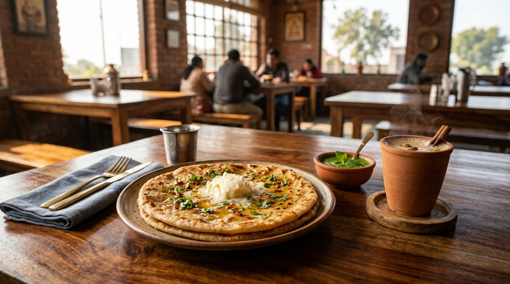
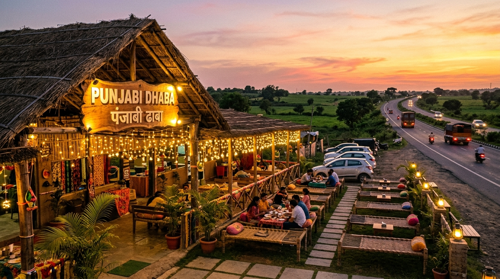

अगर आपने कभी भारत में लंबी सड़क यात्रा की है, तो आप उस जानी-पहचानी भावना को बहुत अच्छे से समझते होंगे। यह अहसास आमतौर पर दोपहर के ठीक तीन बजे के आसपास जागता है। बाहर धूप पूरी तेजी पर होती है, सीधी सपाट सड़क को लगातार घूरते-घूरते आंखें भारी होने लगती हैं, और कार की सीट पर बैठे-बैठे पैर बिल्कुल अकड़ जाते हैं। कार का AC भले ही मजे से चल रहा हो, लेकिन मन किसी ठंडी छांव, एक गिलास ताजे पानी और कड़क अदरक चाय की तलाश में भटक रहा होता है।
और तभी, जैसे किसी जादू की तरह, सड़क के किनारे एक रंग-बिरंगा लकड़ी का बोर्ड दिखता है जिस पर लिखा होता है—"पंजाबी ढाबा"। यह ढाबा एक विशाल, हरे-भरे नीम के पेड़ की छत्रछाया में बसा होता है। बाहर छप्पर की छांव में कतार से बुनी हुई मजबूत जूट की खटिया (चारपाई) बिछी होती हैं और शाम की पीली लाइट्स टिमटिमा रही होती हैं। आप फौरन एक कट लेते हैं, गाड़ी को पेड़ की ठंडी छांव में पार्क करते हैं और बाहर कदम रखते हैं। उतरते ही ठंडी देहाती हवा आपके चेहरे को छूती है, और सफर की आधी थकान वहीं हवा में घुल जाती है।
1. फाइव स्टार होटल के गद्दे से बेहतर क्यों लगती है सड़क किनारे की खटिया
जैसे ही आप उस जूट से बुनी पारंपरिक चारपाई पर बैठते हैं, आपकी पीठ को जो राहत मिलती है, उसका कोई मुकाबला नहीं। रस्सी का खिंचाव इतना संतुलित होता है—ना ज्यादा सख्त और ना ही धंसने वाला। आप अपने जूते उतारकर किनारे रखते हैं, पैर सीधे फैलाते हैं, और ऊपर नीम की शाखों को हवा में झूमते हुए देखते हैं। चेहरे पर अपने-आप एक सुकून भरी मुस्कान आ जाती है और मन सोचता है: आखिर बड़े-बड़े फैंसी होटलों ने इन आरामदायक खटिया को भारी-भरकम सोफों से क्यों बदल दिया?
अभी आप चारों तरफ नजर घुमा ही रहे होते हैं कि कंधे पर साफ तौलिया डाले, चेहरे पर एक चौड़ी और अपनायत भरी मुस्कान लिए ढाबे का छोटू आपकी खटिया के पास पहुंच जाता है। उसके एक हाथ में ठंडा पानी भरा चमकदार जग होता है और उंगलियों में फंसे चार स्टील के गिलास। वह खटिया के सिरहाने रखी लकड़ी की तिपाई पर हल्की सी खनक के साथ गिलास रखता है, बिना एक भी बूंद छलकाए पानी भरता है, और मुस्कुराकर खड़ा हो जाता है।
2. बिना मेनू कार्ड वाला छोटा और उसकी बुलेट ट्रेन जैसी मेमोरी
पंजाबी ढाबे में कोई भारी-भरकम लेदर बाइंडिंग वाली मेनू बुक नहीं होती। छोटू आपकी खटिया के पास बस एक गहरी सांस लेता है और किसी रेडियो कमेंटेटर की बुलेट ट्रेन वाली रफ्तार में शुरू हो जाता है: "आलू परांठा, पनीर परांठा, गोभी परांठा, दाल मखनी, कढ़ाई पनीर, तंदूरी रोटी, लस्सी और कुल्हड़ वाली कड़क अदरक चाय, साबजी!"
वह इसे इतने आत्मविश्वास और सहज भाव से कहता है कि आपको सोचने की जरूरत ही नहीं पड़ती। आप हंसते हुए कहते हैं, "दो गरमा-गरम आलू के परांठे ले आओ सफेद मक्खन के साथ, और दो कुल्हड़ कड़क अदरक चाय!" छोटू तेजी से सिर हिलाता है और तंदूर की भट्टी की तरफ दौड़ लगा देता है।
"हाईवे का ढाबा किसी बनावटी कायदे-कानून की परवाह नहीं करता। यह आपको खुला आसमान, सच्ची मुस्कान और पेट भर गरमा-गरम खाना देता है।"

3. तंदूर के गरमा-गरम परांठे और घर के सफेद मक्खन का जादू
अगर आप थोड़ी देर उठकर तंदूर के पास जाएं, तो खानसामा (बावर्ची) का कमाल देखने लायक होता है। वह दहकते हुए लाल मिट्टी के तंदूर के पास खड़ा होता है। गेहूं के आटे का एक बड़ा पेड़ा लेता है, उसमें मसालों से भरा उबला आलू ठूंसता है, हाथों की थपकियों से उसे गोल फैलाता है, और एक झटके में हाथ तंदूर की अंदरूनी दीवार पर चिपका देता है। छन-छन की एक लजीज आवाज गूंजती है!
दो मिनट के भीतर चिमटे की मदद से सुनहरा, कुरकुरे किनारों वाला फूला हुआ परांठा बाहर आ जाता है। वह उसे स्टील की साफ थाली में रखता है, पास रखे मिट्टी के मटके से बड़ा चम्मच भरकर ताजा सफेद मक्खन (घर का मक्खन) ठीक परांठे के बीच में रख देता है। गर्म परांठे की आंच पाते ही मक्खन पिघलकर सुनहरी नदी की तरह चारों तरफ बहने लगता है।
साथ में तीखी हरी पुदीने की चटनी और घर का खट्टा-मीठा आम का अचार। खुले आसमान के नीचे, चेहरे पर आती ठंडी दोपहर की हवा के बीच जब आप मक्खन में डूबा परांठे का पहला निवाला तोड़ते हैं, तो वह सादगी भरा परम सुख होता है। किसी महंगे फाइव-स्टार रेस्तरां की चांदी की थाली भी इस देसी स्वाद का मुकाबला नहीं कर सकती।
4. मिट्टी के कुल्हड़ वाली चाय: हाईवे की थकान की असली दवा
परांठे जहां पेट को तृप्त करते हैं, वहीं चाय दिमाग को फिर से तरोताजा कर देती है। यहां चाय बनाना भी किसी इत्मीनान भरे सुकून से कम नहीं है। चाय वाला लोहे के छोटे दस्ते से ताजा अदरक और हरी इलायची कूटता है। उबलते तांबे के पतीले में पत्ती, पानी, चीनी और गाढ़े दूध के साथ यह मसाला छौंक दिया जाता है।
चाय जब खौल-खौलकर गहरी और सुगंधित हो जाती है, तो वह पतीले को हवा में ऊंचा उठाकर मिट्टी के छोटे कुल्हड़ों में धार छोड़ता है। जब आप उस गर्म कुल्हड़ को दोनों हाथों में थामते हैं, तो हथेलियों को गजब का सुकून मिलता है। मिट्टी के बर्तन से सोंधी-सोंधी खुशबू उठती है—बिल्कुल वैसी, जैसी तपी हुई सूखी मिट्टी पर पहली बारिश की बूंदें पड़ने से आती है।
जैसे ही आप पहला घूंट भरते हैं—गर्म, मीठा और अदरक के कड़क तीखेपन से भरा—सिर का सारा भारीपन और हाईवे का सारा तनाव एक ही पल में गायब हो जाता है!

5. ट्रक ड्राइवर, गांव के बुजुर्ग और चाय पर खिली लंबी बातें
ढाबे की सबसे प्यारी खूबी यह है कि यहां हर कोई बराबर है। ढाबा इस बात की बिल्कुल परवाह नहीं करता कि आप बीएमडब्ल्यू से उतरे हैं या पुराने ट्रैक्टर से। हर कोई उन्हीं खटिया पर बैठता है और उसी एक कुल्हड़ में चाय पीता है।
बगल वाली खटिया पर एक बुजुर्ग ट्रक ड्राइवर गुरमेल सिंह अपनी चाय लिए बैठे थे। सफेद दाढ़ी और सिर पर नारंगी पगड़ी। वह पिछले तीन दिनों से लगातार हिमाचल के सेबों से भरा ट्रक लेकर मुंबई की ओर बढ़ रहे थे। मुस्कुराते हुए उन्होंने पहाड़ों के संकरे मोड़ों के ऐसे मजेदार किस्से सुनाए, जहां बंदर खुली खिड़की से स्नैक्स छीनने की ताक में रहते हैं!
दूसरी खटिया पर गांव के एक बुजुर्ग अपनी साइकिल टिकाकर बैठे थे और बादलों के रंग को देखकर शाम के मौसम का सटीक अनुमान लगा रहे थे। उस आधे घंटे में किसी ने अपना मोबाइल फोन नहीं छुआ। कोई ऑफिस के ईमेल चेक नहीं कर रहा था। सब आराम से खटिया पर टिके थे, चाय की चुस्कियां ले रहे थे, ठंडी हवा का आनंद ले रहे थे और खुलकर हंस रहे थे।
6. तृप्त पेट और मुस्कुराते दिल के साथ फिर से हाईवे का सफर
जब तक हमारी चाय का दूसरा कुल्हड़ खत्म हुआ, सूरज खेतों के पीछे ढलने लगा था। आसमान में नारंगी और गुलाबी रंग बिखर गए थे, और पंजाबी ढाबे के चारों तरफ पीली फेरी लाइट्स जल उठी थीं।
पैर अब हल्के लग रहे थे, पेट तृप्त था और दिल बिल्कुल शांत। हमने छोटू को बिल और एक प्यार भरी टिप दी, मुस्कुराते चेहरे से विदा ली और अपनी गाड़ी की तरफ चल दिए। जब चाबी घुमाकर हम वापस चिकने हाईवे पर चढ़े, तो रियरव्यू मिरर में हमने ढाबे को पीछे छूटते देखा।
तंदूर पर खानसामा अगला परांठा सेक रहा था, पतीले में चाय खौल रही थी, और एक और थका हुआ ड्राइवर अपनी गाड़ी नीम के पेड़ के नीचे रोक रहा था। हाईवे तेज रफ्तार से भागता रहेगा, लेकिन सड़क किनारे का यह ढाबा हमें जिंदगी की एक अनमोल सच्चाई सिखा जाता है: सफर का सबसे खूबसूरत हिस्सा मंजिल तक पहुंचना नहीं, बल्कि बीच में रुककर इन छोटी-छोटी खुशियों को महसूस करना है।
लेखिका: गुरदीप सिधू (Gurdeep Sidhu)
संस्थापक, Sidhu's Views। धीमी जीवनशैली, सहज यात्रा संस्मरण, हस्तशिल्प और भारतीय पारिवारिक जीवन की कहानियों की खोज।